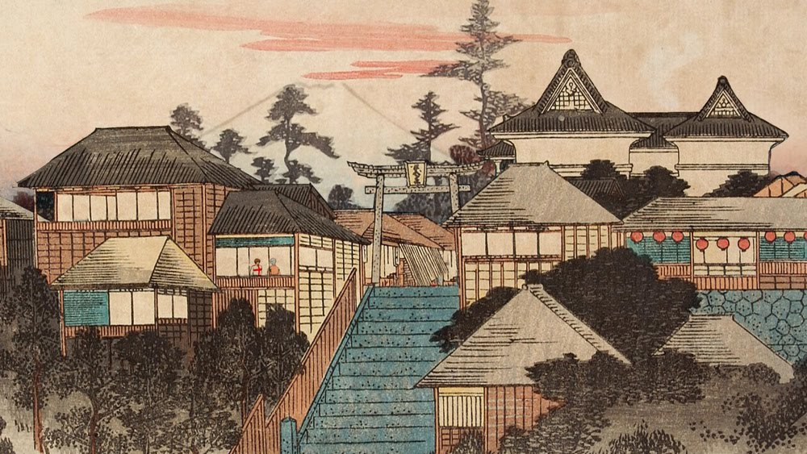

Tokyo, officially the Tokyo Metropolis, is the capital and largest city of Japan. Formerly known as Edo, its metropolitan area (spanning 13,452 square kilometres or 5,194 square miles) is the most populous in the world, with an estimated 37.468 million residents as of 2018, the city proper has a population of 13.99 million people. Located at the head of Tokyo Bay, the prefecture forms part of the Kantō region on the central coast of Honshu, Japan's largest island. Tokyo serves as Japan's economic center and is the seat of both the Japanese government and the Emperor of Japan.
Originally a fishing village named Edo, the city became a prominent political centre in 1603, when it became the seat of the Tokugawa shogunate. By the mid-18th century, Edo was one of the most populous cities in the world with a population of over one million people. Following the Meiji Restoration of 1868, the imperial capital in Kyoto was moved to Edo, which was renamed "Tokyo" (lit. 'Eastern Capital'). Tokyo was devastated by the 1923 Great Kantō earthquake, and again by Allied bombing raids during World War II. Beginning in the 1950s, the city underwent rapid reconstruction and expansion efforts, going on to lead the Japanese economic miracle. Since 1943, the Tokyo Metropolitan Government has administered the prefecture's 23 special wards (formerly Tokyo City), various commuter towns and suburbs in its western area, and two outlying island chains known as the Tokyo Islands.
